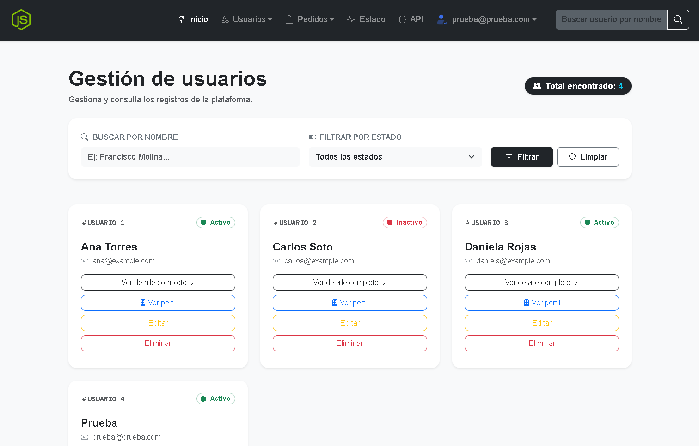

Autenticacion
Registro, login, password hashing con scrypt (node:crypto) y proteccion de endpoints mediante JWT y express-jwt.
Full Stack Project
Aplicacion web que permite gestionar usuarios, perfiles y pedidos con Node.js, Express y PostgreSQL. Incluye autenticacion JWT, relaciones de datos, filtros y multiples clientes que consumen la misma API.
Resumen
Backend
Node.js + Express
Datos
PostgreSQL + Sequelize
Seguridad
scrypt + JWT
Clientes
Web + CLI + Postman
Contexto
La aplicacion busca centralizar la gestion de usuarios, perfiles y pedidos en una API REST comun que pueda ser consumida por multiples clientes: una interfaz web, una linea de comandos (CLI) y herramientas de prueba como Postman.
Implementacion
La aplicacion expone una API REST en Express. Los controllers traducen HTTP hacia services reutilizables; Sequelize representa el modelo relacional y PostgreSQL mantiene la persistencia.
La interfaz Web (Handlebars) y el CLI consumen esa misma API, evitando duplicar las reglas de negocio en clientes diferentes.
Vista representativa

Captura de pantalla de la gestión de usuarios. Para ver la aplicacion real, visita la demo en vivo.
Funcionalidades
Registro, login, password hashing con scrypt (node:crypto) y proteccion de endpoints mediante JWT y express-jwt.
Creacion, lectura, actualizacion y eliminacion de usuarios con filtros por rol, estado y busqueda por nombre o email.
Modelo relacional con asociaciones Sequelize: un usuario tiene un perfil, multiples pedidos y puede asignarse roles.
Web (Handlebars + Bootstrap + Fetch) y CLI reutilizan el mismo contrato HTTP y las mismas capacidades del backend.
Arquitectura
Web ───────┐
│
CLI ───────┼──→ REST API
│ ↓
Postman ───┘ Middlewares
↓
Controllers
↓
Services
↓
Models
↓
Sequelize
↓
PostgreSQLUser 1:1 ProfileUser 1:N OrderUser N:M RoleContrato HTTP
| Metodo | Endpoint | Responsabilidad |
|---|---|---|
POST |
/api/v1/auth/login |
Autenticar usuario y emitir JWT. |
GET |
/api/v1/users |
Listar usuarios y aplicar filtros. |
POST |
/api/v1/users |
Crear un usuario autenticado. |
PUT |
/api/v1/users/:id |
Actualizar un usuario. |
DELETE |
/api/v1/users/:id |
Eliminar un usuario. |
Ejemplo de filtro: /api/v1/users?role=admin&status=active&search=ana
Criterio tecnico
Web y CLI consumen la misma API para no duplicar el CRUD ni las reglas de negocio.
El userId de operaciones protegidas se obtiene
desde req.auth.sub y no desde un body controlado
por el cliente.
Las contraseas se verifican con scrypt (node:crypto) y no se almacenan como texto plano.
El ORM abstrae la base de datos relacional y permite definir asociaciones, validaciones y consultas de forma declarativa.
Desafio
Handlebars se renderiza en servidor, mientras el JWT del cliente
Web se guarda en localStorage. Por eso el template no
puede leer directamente ese estado del navegador durante
res.render().
Aprendizaje
JavaScript cliente actualiza la navegacion segun el estado local,
mientras que la seguridad real permanece en la API mediante
express-jwt. Ocultar un enlace no sustituye proteger
un endpoint.
Codigo y contacto
El repositorio contiene la aplicacion completa. El portafolio resume el problema, la arquitectura y las decisiones que vale la pena discutir en una entrevista tecnica.